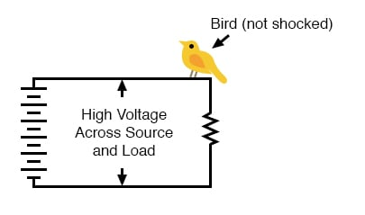
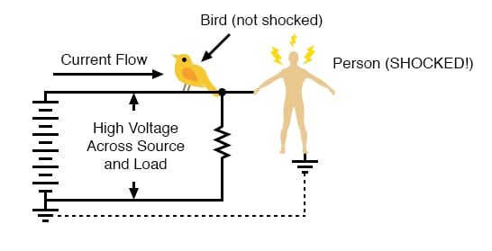
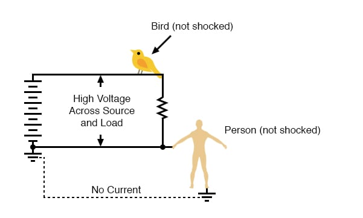
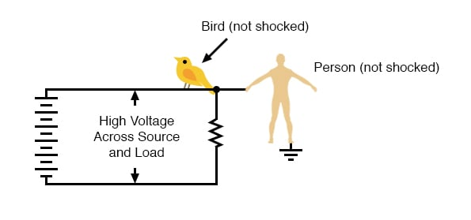
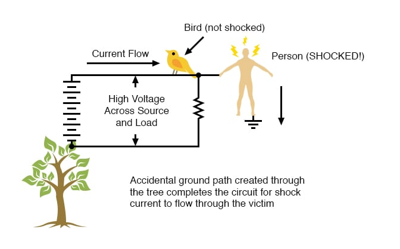
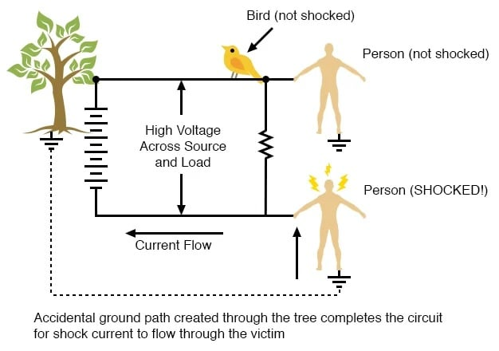
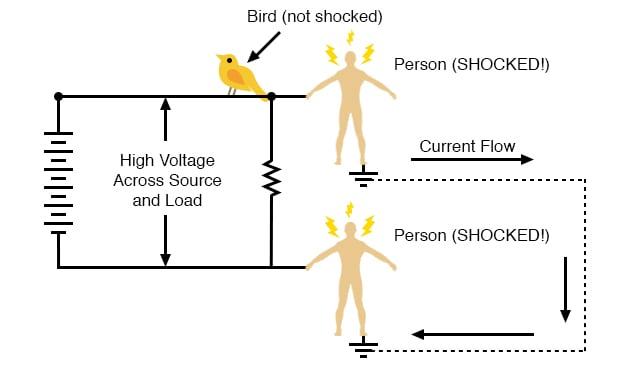

As we’ve already learned, electricity requires a complete path (circuit) to continuously flow. This is why the shock received from static electricity is only a momentary jolt: the flow of current is necessarily brief when static charges are equalized between two objects. Shocks of self-limited duration like this are rarely hazardous.
Without two contact points on the body for current to enter and exit, respectively, there is no hazard of shock. This is why birds can safely rest on high-voltage power lines without getting shocked: they make contact with the circuit at only one point.

In order for current to flow through a conductor, there must be a voltage present to motivate it. Voltage, as you should recall, is always relative between two points. There is no such thing as voltage “on” or “at” a single point in the circuit, and so the bird contacting a single point in the above circuit has no voltage applied across its body to establish a current through it.
Yes, even though they rest on two feet, both feet are touching the same wire, making them electrically common. Electrically speaking, both of the bird’s feet touch the same point, hence there is no voltage between them to motivate current through the bird’s body.
This might lead one to believe that it’s impossible to be shocked by electricity by only touching a single wire. Like the birds, if we’re sure to touch only one wire at a time, we’ll be safe, right? Unfortunately, this is not correct. Unlike birds, people are usually standing on the ground when they contact a “live” wire.
Many times, one side of a power system will be intentionally connected to earth ground, and so the person touching a single wire is actually making contact between two points in the circuit (the wire and earth ground):

The ground symbol is that set of three horizontal bars of decreasing width located at the lower-left of the circuit shown, and also at the foot of the person being shocked. In real life, the power system ground consists of some kind of metallic conductor buried deep in the ground for making maximum contact with the earth.
That conductor is electrically connected to an appropriate connection point on the circuit with thick wire. The victim’s ground connection is through their feet, which are touching the earth.
A few questions usually arise at this point in the mind of the student:
In answer to the first question, the presence of an intentional “grounding” point in an electric circuit is intended to ensure that one side of it is safe to come in contact with. Note that if our victim in the above diagram were to touch the bottom side of the resistor, nothing would happen even though their feet would still be contacting ground:

Because the bottom side of the circuit is firmly connected to ground through the grounding point on the lower-left of the circuit, the lower conductor of the circuit is made electrically common with earth ground. Since there can be no voltage between electrically common points, there will be no voltage applied across the person contacting the lower wire, and they will not receive a shock.
For the same reason, the wire connecting the circuit to the grounding rod/plates is usually left bare (no insulation), so that any metal object it brushes up against will similarly be electrically common with the earth.
Circuit grounding ensures that at least one point in the circuit will be safe to touch. But what about leaving a circuit completely ungrounded? Wouldn’t that make any person touching just a single wire as safe as the bird sitting on just one? Ideally, yes. Practically, no. Observe what happens with no ground at all:

Despite the fact that the person’s feet are still contacting the ground, any single point in the circuit should be safe to touch. Since there is no complete path (circuit) formed through the person’s body from the bottom side of the voltage source to the top, there is no way for a current to be established through the person.
However, this could all change with an accidental ground, such as a tree branch touching a power line and providing the connection to earth ground:

Such an accidental connection between a power system conductor and the earth (ground) is called a ground fault.
Ground faults may be caused by many things, including dirt buildup on power line insulators (creating a dirty-water path for current from the conductor to the pole, and to the ground, when it rains), groundwater infiltration in buried power line conductors, and birds landing on power lines, bridging the line to the pole with their wings.
Given the many causes of ground faults, they tend to be unpredictable. In the case of trees, no one can guarantee which wire their branches might touch. If a tree were to brush up against the top wire in the circuit, it would make the top wire safe to touch and the bottom one dangerous—just the opposite of the previous scenario where the tree contacts the bottom wire:

With a tree branch contacting the top wire, that wire becomes the grounded conductor in the circuit, electrically common with earth ground. Therefore, there is no voltage between that wire and ground, but full (high) voltage between the bottom wire and ground.
As mentioned previously, tree branches are only one potential source of ground faults in a power system. Consider an ungrounded power system with no trees in contact, but this time with two people touching single wires:

With each person standing on the ground, contacting different points in the circuit, a path for shock current is made through one person, through the earth, and through the other person. Even though each person thinks they’re safe in only touching a single point in the circuit, their combined actions create a deadly scenario. In effect, one person acts as the ground fault which makes it unsafe for the other person.
This is exactly why ungrounded power systems are dangerous: the voltage between any point in the circuit and ground (earth) is unpredictable because a ground fault could appear at any point in the circuit at any time. The only character guaranteed to be safe in these scenarios is the bird, who has no connection to earth ground at all!
By firmly connecting a designated point in the circuit to earth ground (“grounding” the circuit), at least safety can be assured at that one point. This is more assurance of safety than having no ground connection at all.
In answer to the second question, rubber-soled shoes do indeed provide some electrical insulation to help protect someone from conducting shock current through their feet. However, most common shoe designs are not intended to be electrically “safe,” their soles being too thin and not of the right substance.
Also, any moisture, dirt, or conductive salts from body sweat on the surface of or permeated through the soles of shoes will compromise what little insulating value the shoe had to begin with. There are shoes specifically made for dangerous electrical work, as well as thick rubber mats made to stand on while working on live circuits, but these special pieces of gear must be in the absolutely clean, dry condition in order to be effective.
Suffice it to say, normal footwear is not enough to guarantee protection against electric shock from a power system.
Research conducted on contact resistance between parts of the human body and points of contact (such as the ground) shows a wide range of figures (see the end of the chapter for information on the source of this data):
As you can see, not only is rubber a far better insulating material than leather, but the presence of water in a porous substance such as leather greatly reduces electrical resistance.
In answer to the third question, dirt is not a very good conductor (at least not when it’s dry!). It is too poor of a conductor to support continuous current for powering a load. However, as we will see in the next section, it takes very little current to injure or kill a human being, so even the poor conductivity of dirt is enough to provide a path for deadly current when there is sufficient voltage available, as there usually is in power systems.
Some ground surfaces are better insulators than others. Asphalt, for instance, being oil-based, has a much greater resistance than most forms of dirt or rock. Concrete, on the other hand, tends to have fairly low resistance due to its intrinsic water and electrolyte (conductive chemical) content.
REVIEW: